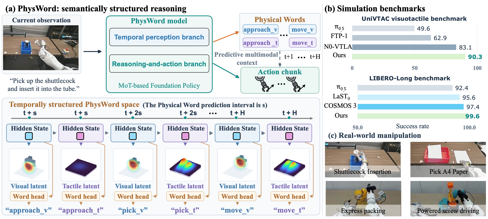
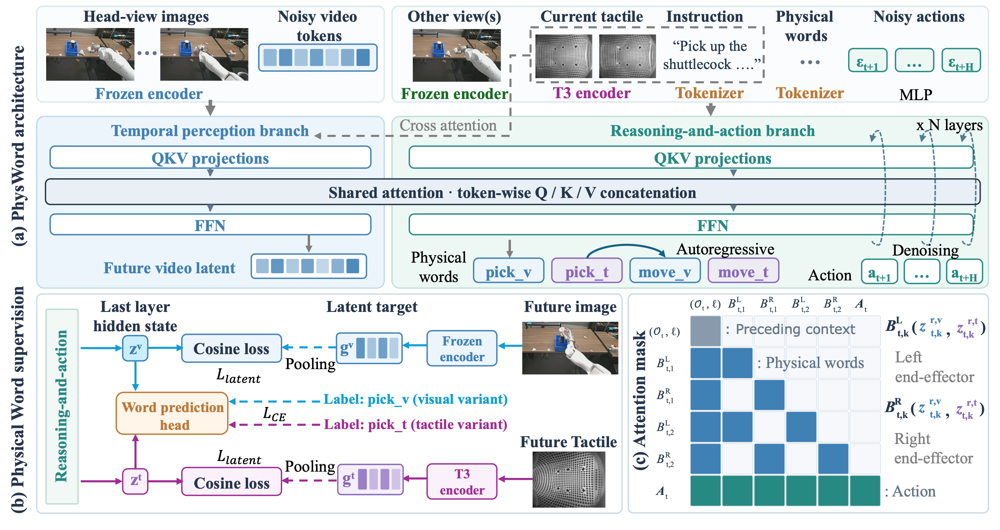

Observe the present.
Encode visual history, current camera views, the language instruction, and optional tactile observations.
NVIDIAPEKING UNIVERSITYUC BERKELEY
A Vocabulary for Structuring Latent Reasoning
in Robot Manipulation
In this structured, scalable physical reasoning paradigm, predicted future visual and tactile dynamics steer the action.
THE PAPER / 2026
* Equal contribution
THE IDEA

PhysWord is a reasoning-before-acting foundation model built on Physical Words. These words use atomic action verbs as semantic anchors for continuous physical dynamics, and align each contextual hidden state with future visual and tactile dynamics. It extends the scalability of language reasoning to the continuous latent space.
Multimodal reasoning provides robotic foundation models with predictive context needed for reliable action generation. However, language-based reasoning captures task semantics but struggles to express fine-grained physical dynamics, while latent reasoning models future state evolution but offers limited structure for organizing these dynamics into reusable reasoning primitives. To bridge this gap, we introduce PhysWord, a reasoning-before-acting foundation model built on Physical Words, which use atomic action verbs as shared semantic anchors for continuous representations of physical dynamics. Specifically, PhysWord predicts upcoming atomic action words and directly aligns their contextual hidden states with latent targets derived from the corresponding future observations. Building on these primitives, we construct a temporally structured PhysWord space with visual and optional tactile variants of each action word. Autoregressively predicting Physical Words across future timesteps captures transitions between execution stages, providing structured multimodal context for action generation. PhysWord achieves state-of-the-art success rates of 90.3% on visuotactile UniVTAC and 99.6% on vision-based LIBERO-Long, and outperforms competing methods on real-world tasks using bimanual grippers and dexterous hands. Further evaluations demonstrate that our structured latent reasoning framework generalizes to unseen scenarios and enables long-horizon manipulation.
01 IN THE REAL WORLD
Dexterous hands and bimanual grippers.
One vocabulary for motion, contact, and the transitions between them.
Experiment recordings. Displayed success rates are aggregate task results from the paper, evaluated over three runs of 30 trials per task.
02 THE PHYSWORD FRAMEWORK
Shared action semantics. Complementary visual and tactile predictions.
A structured vocabulary for the physical world.
Anticipates future visual dynamics
Anticipates future contact dynamics
Each word’s contextual hidden state is jointly supervised by its action label and a future sensory latent target. Vision-only tasks use the visual variant.
Encode visual history, current camera views, the language instruction, and optional tactile observations.
Autoregressively predict Physical Words at future timesteps, anticipating changes in motion and contact.
Condition flow-matching action generation on the predicted words and the shared multimodal context.

03 QUANTITATIVE EVALUATION
Evaluated across contact-rich simulation,
real-world manipulation, and unseen configurations.
FROM THE SIMULATOR
Simulation clips are grouped by benchmark. Select a clip to watch the full recording.
04 BEYOND THE TRAINING SEQUENCE
Physical Words preserve shared action semantics as scenes,
task stages, and available sensory inputs change.
New backgrounds, objects, and positions
+34.4 and +28.3 percentage points over π0.5 and FTP-1. Mean across Pick A4 Paper and Powered Screw Driving. Table 2(b).
We evaluate generalization on Pick A4 Paper and Powered Screw Driving under three types of distribution shift: unseen backgrounds, object instances, and object positions. Each factor is varied separately while the remaining conditions are controlled. Unseen backgrounds introduce distractors absent from the training demonstrations, while retaining the task objects and their placement distribution. For unseen objects, the A4 sheet is replaced with napkins, masks, notebooks, tennis balls, and sheets of different colors and sizes; the objective remains to pick up the object and place it entirely inside the basket. Powered Screw Driving uses toy-car bases with unseen structural configurations, such as variants without wheels or the front section, while retaining the screw-fastening objective. Unseen positions place the manipulated objects at workspace positions not represented in the training demonstrations, while retaining the training backgrounds and object instances.
One training cycle · three cycles at test time
70.0% success when a new sheet is introduced after each placement. Both baselines fail to finish the extended sequence. Table 9.
Training demonstrations contain a single pick-and-place cycle. An A4 sheet is initially placed entirely on the tabletop, with no edge overhanging. The dexterous hand first establishes contact with its five fingers and uses friction to gradually slide the sheet toward the table edge. Once part of the sheet extends beyond the edge, the hand grasps and lifts it, then transfers it into a basket. A trial succeeds only if the entire sheet is placed inside the basket. During evaluation, a new sheet is introduced after each completed placement, requiring three consecutive cycles within one episode. Success requires completing the entire extended sequence within a single episode.
Two objects · closure stage repeated
+40.0 and +36.7 percentage points over π0.5 and FTP-1 on a packing sequence absent from training. Table 9.
Training demonstrations involve packing one object. The robot places an object from the tabletop into an express box and closes all four flaps. It then picks up tape with the right gripper and coordinates both grippers to apply the tape along the lid seam and tear it off. Success requires completion of the entire sequence and a fully sealed box. At test time, the robot must pack two objects and repeat the closure stage after the box flaps are manually reopened, before sealing the box. Success requires completing the entire extended sequence within a single episode.
UniVTAC · predicted touch replaces online sensing
Predicted tactile latents retain 89.0%, 1.3 points below measured touch and above both baselines. Table 5.
We evaluate whether a policy trained with tactile observations can operate without online tactile sensing. Using the same trained PhysWord checkpoint, we replace measured tactile inputs with previously predicted tactile latents. For initial timesteps not yet covered by predictions, tactile context is initialized using observations from the opening frames of training demonstrations for the corresponding task.
BUILDING ON THIS WORK
If you find this work useful,
please consider citing our paper.
@misc{liu2026physicalwords,
title = {Physical Words: A Vocabulary for
Structuring Latent Reasoning
in Robot Manipulation},
author = {Liu, Jiaming and Zhu, Xinghao and
Zhang, Yiming and Zhang, Shanghang and
Wang, Yinxi and Yang, Yichu and
Liu, Zhuoyang and Niu, Dantong and
Pouya, Soha and Li, Juekun and
Chang, Yan},
year = {2026},
note = {Research manuscript}
}